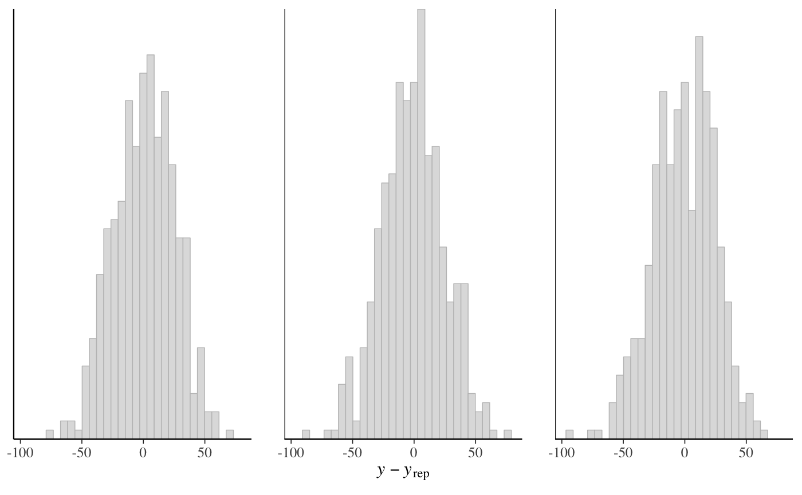
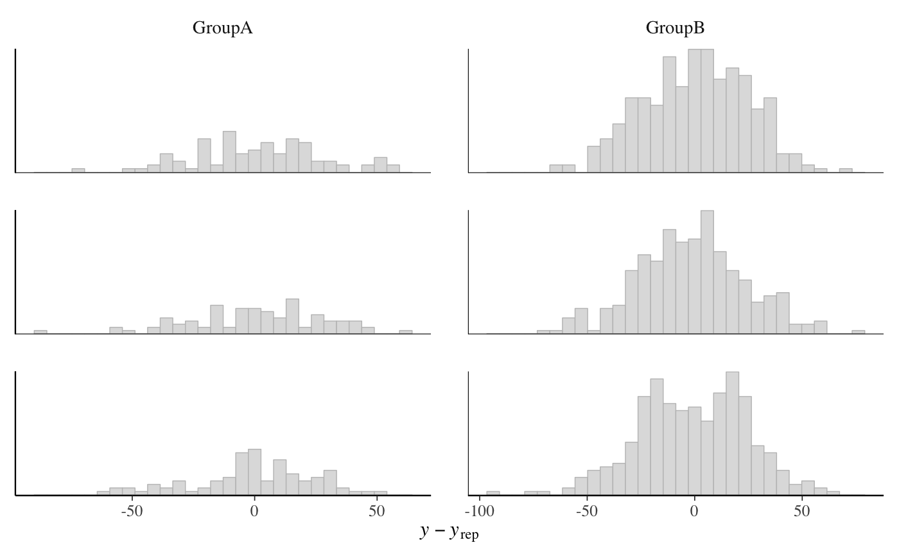
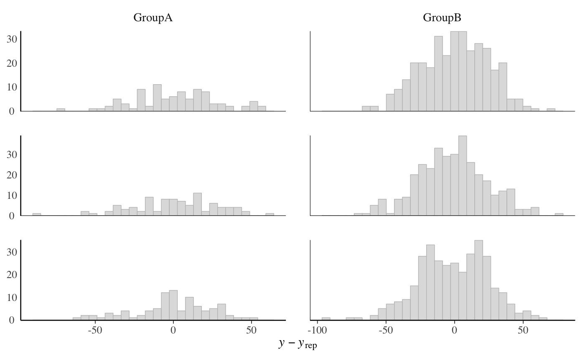
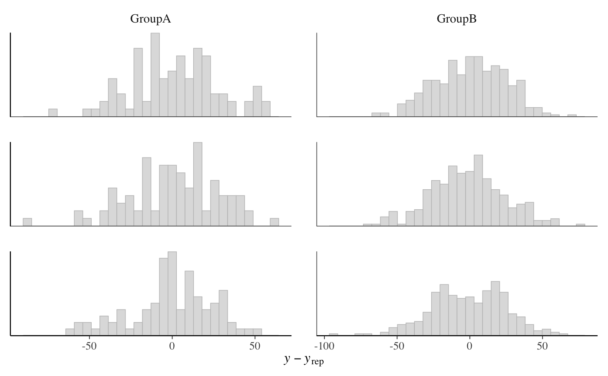
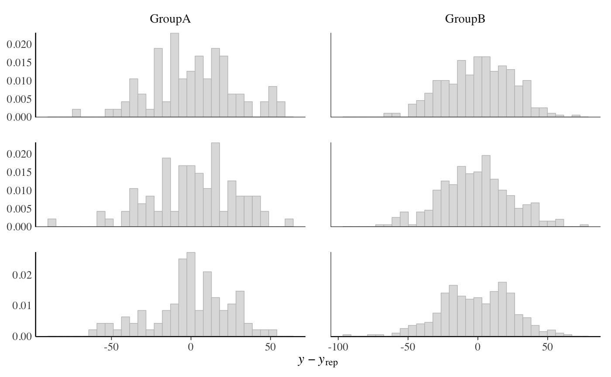
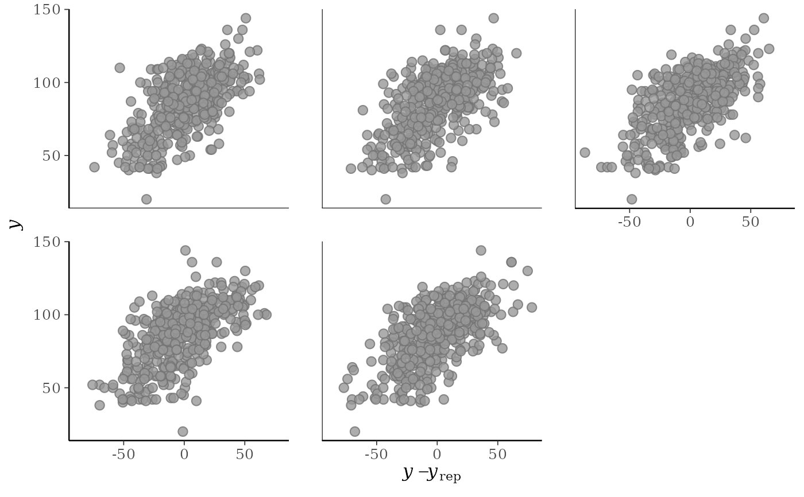
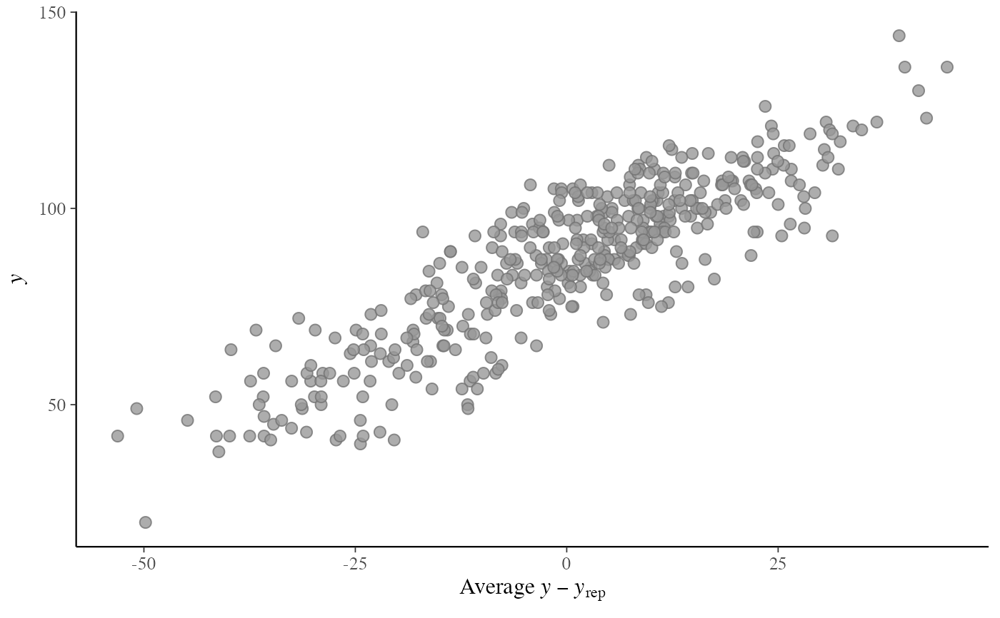
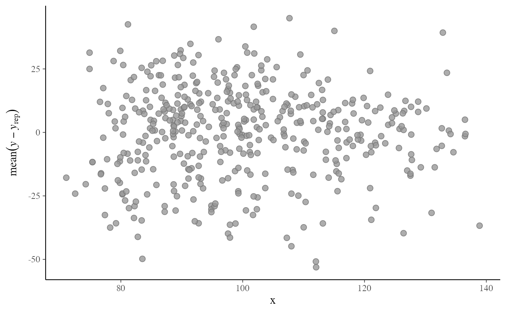
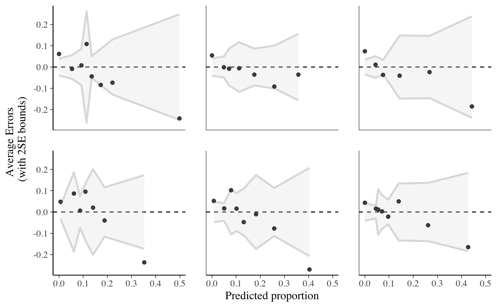
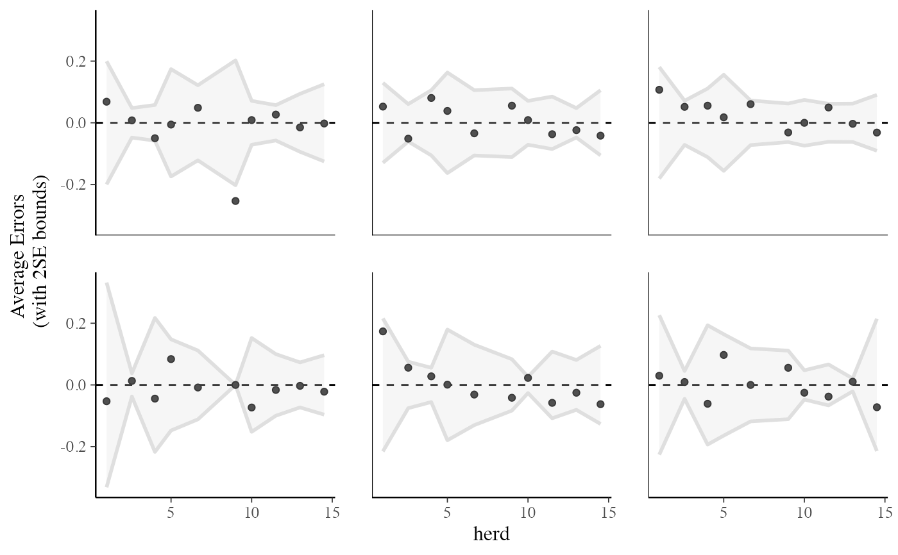

Various plots of predictive errors y - yrep. See the
Details and Plot Descriptions sections, below.
ppc_error_hist(
y,
yrep,
...,
facet_args = list(),
binwidth = NULL,
bins = NULL,
breaks = NULL,
freq = TRUE
)
ppc_error_hist_grouped(
y,
yrep,
group,
...,
facet_args = list(),
binwidth = NULL,
bins = NULL,
breaks = NULL,
freq = TRUE
)
ppc_error_scatter(y, yrep, ..., facet_args = list(), size = 2.5, alpha = 0.8)
ppc_error_scatter_avg(
y,
yrep,
x = NULL,
...,
stat = "mean",
size = 2.5,
alpha = 0.8
)
ppc_error_scatter_avg_grouped(
y,
yrep,
group,
...,
stat = "mean",
facet_args = list(),
size = 2.5,
alpha = 0.8
)
ppc_error_scatter_avg_vs_x(
y,
yrep,
x,
...,
stat = "mean",
size = 2.5,
alpha = 0.8
)
ppc_error_binned(
y,
yrep,
x = NULL,
...,
facet_args = list(),
bins = NULL,
size = 1,
alpha = 0.25
)
ppc_error_data(y, yrep, group = NULL)A vector of observations. See Details.
An S by N matrix of draws from the posterior (or prior)
predictive distribution. The number of rows, S, is the size of the
posterior (or prior) sample used to generate yrep. The number of columns,
N is the number of predicted observations (length(y)). The columns of
yrep should be in the same order as the data points in y for the plots
to make sense. See the Details and Plot Descriptions sections for
additional advice specific to particular plots.
Currently unused.
A named list of arguments (other than facets) passed
to ggplot2::facet_wrap() or ggplot2::facet_grid()
to control faceting. Note: if scales is not included in facet_args
then bayesplot may use scales="free" as the default (depending
on the plot) instead of the ggplot2 default of scales="fixed".
Passed to ggplot2::geom_histogram() to override
the default binwidth.
For ppc_error_binned(), the number of bins to use (approximately).
Passed to ggplot2::geom_histogram() as an
alternative to binwidth.
For histograms, freq=TRUE (the default) puts count on the
y-axis. Setting freq=FALSE puts density on the y-axis. (For many
plots the y-axis text is off by default. To view the count or density
labels on the y-axis see the yaxis_text() convenience
function.)
A grouping variable of the same length as y.
Will be coerced to factor if not already a factor.
Each value in group is interpreted as the group level pertaining
to the corresponding observation.
For scatterplots, arguments passed to
ggplot2::geom_point() to control the appearance of the points. For the
binned error plot, arguments controlling the size of the outline and
opacity of the shaded region indicating the 2-SE bounds.
A numeric vector the same length as y to use as the x-axis variable.
A function or a string naming a function for computing the
posterior average. In both cases, the function should take a vector input and
return a scalar statistic. The function name is displayed in the axis-label.
Defaults to "mean".
A ggplot object that can be further customized using the ggplot2 package.
All of these functions (aside from the *_scatter_avg functions)
compute and plot predictive errors for each row of the matrix yrep, so
it is usually a good idea for yrep to contain only a small number of
draws (rows). See Examples, below.
For binomial and Bernoulli data the ppc_error_binned() function can be used
to generate binned error plots. Bernoulli data can be input as a vector of 0s
and 1s, whereas for binomial data y and yrep should contain "success"
proportions (not counts). See the Examples section, below.
ppc_error_hist()A separate histogram is plotted for the predictive errors computed from
y and each dataset (row) in yrep. For this plot yrep should have
only a small number of rows.
ppc_error_hist_grouped()Like ppc_error_hist(), except errors are computed within levels of a
grouping variable. The number of histograms is therefore equal to the
product of the number of rows in yrep and the number of groups
(unique values of group).
ppc_error_scatter()A separate scatterplot is displayed for y vs. the predictive errors
computed from y and each dataset (row) in yrep. For this plot yrep
should have only a small number of rows.
ppc_error_scatter_avg()A single scatterplot of y vs. the average of the errors computed from
y and each dataset (row) in yrep. For each individual data point
y[n] the average error is the average of the errors for y[n] computed
over the the draws from the posterior predictive distribution.
When the optional x argument is provided, the average error is plotted
on the y-axis and the predictor variable x is plotted on the x-axis.
ppc_error_scatter_avg_vs_x()Deprecated. Use ppc_error_scatter_avg(x = x) instead.
ppc_error_binned()Intended for use with binomial data. A separate binned error plot (similar
to arm::binnedplot()) is generated for each dataset (row) in yrep. For
this plot y and yrep should contain proportions rather than counts,
and yrep should have only a small number of rows.
Gelman, A., Carlin, J. B., Stern, H. S., Dunson, D. B., Vehtari, A., and Rubin, D. B. (2013). Bayesian Data Analysis. Chapman & Hall/CRC Press, London, third edition. (Ch. 6)
y <- example_y_data()
yrep <- example_yrep_draws()
ppc_error_hist(y, yrep[1:3, ])
#> `stat_bin()` using `bins = 30`. Pick better value with `binwidth`.

# errors within groups
group <- example_group_data()
(p1 <- ppc_error_hist_grouped(y, yrep[1:3, ], group))
#> `stat_bin()` using `bins = 30`. Pick better value with `binwidth`.

p1 + yaxis_text() # defaults to showing counts on y-axis
#> `stat_bin()` using `bins = 30`. Pick better value with `binwidth`.

# \donttest{
table(group) # more obs in GroupB, can set freq=FALSE to show density on y-axis
#> group
#> GroupA GroupB
#> 93 341
(p2 <- ppc_error_hist_grouped(y, yrep[1:3, ], group, freq = FALSE))
#> `stat_bin()` using `bins = 30`. Pick better value with `binwidth`.

p2 + yaxis_text()
#> `stat_bin()` using `bins = 30`. Pick better value with `binwidth`.

# }
# scatterplots
ppc_error_scatter(y, yrep[10:14, ])

ppc_error_scatter_avg(y, yrep)

x <- example_x_data()
ppc_error_scatter_avg(y, yrep, x)

# \dontrun{
# binned error plot with binomial model from rstanarm
suppressPackageStartupMessages(library(rstanarm))
suppressWarnings(example("example_model", package = "rstanarm"))
#>
#> exmpl_> if (.Platform$OS.type != "windows" || .Platform$r_arch != "i386") {
#> exmpl_+ example_model <-
#> exmpl_+ stan_glmer(cbind(incidence, size - incidence) ~ size + period + (1|herd),
#> exmpl_+ data = lme4::cbpp, family = binomial, QR = TRUE,
#> exmpl_+ # this next line is only to keep the example small in size!
#> exmpl_+ chains = 2, cores = 1, seed = 12345, iter = 1000, refresh = 0)
#> exmpl_+ example_model
#> exmpl_+ }
#> stan_glmer
#> family: binomial [logit]
#> formula: cbind(incidence, size - incidence) ~ size + period + (1 | herd)
#> observations: 56
#> ------
#> Median MAD_SD
#> (Intercept) -1.5 0.6
#> size 0.0 0.0
#> period2 -1.0 0.3
#> period3 -1.1 0.3
#> period4 -1.6 0.4
#>
#> Error terms:
#> Groups Name Std.Dev.
#> herd (Intercept) 0.77
#> Num. levels: herd 15
#>
#> ------
#> * For help interpreting the printed output see ?print.stanreg
#> * For info on the priors used see ?prior_summary.stanreg
formula(example_model)
#> cbind(incidence, size - incidence) ~ size + period + (1 | herd)
# get observed proportion of "successes"
y <- example_model$y # matrix of "success" and "failure" counts
trials <- rowSums(y)
y_prop <- y[, 1] / trials # proportions
# get predicted success proportions
yrep <- posterior_predict(example_model)
yrep_prop <- sweep(yrep, 2, trials, "/")
ppc_error_binned(y_prop, yrep_prop[1:6, ])

# plotting against a covariate on x-axis
herd <- as.numeric(example_model$data$herd)
ppc_error_binned(y_prop, yrep_prop[1:6, ], x = herd)

# }